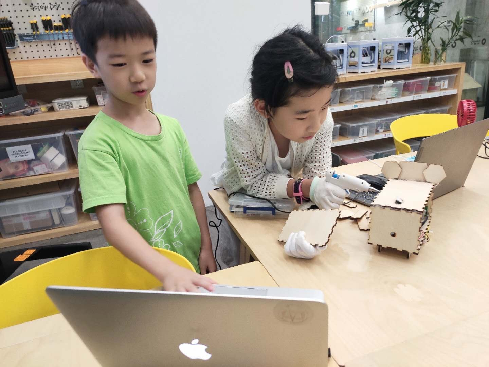
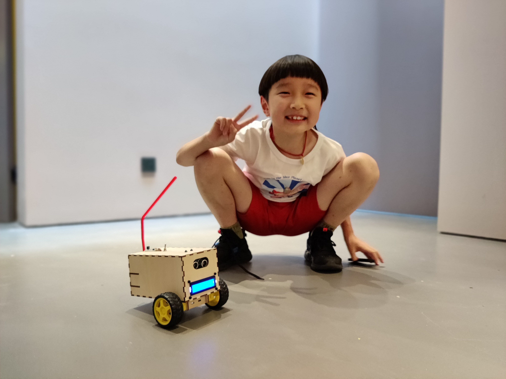
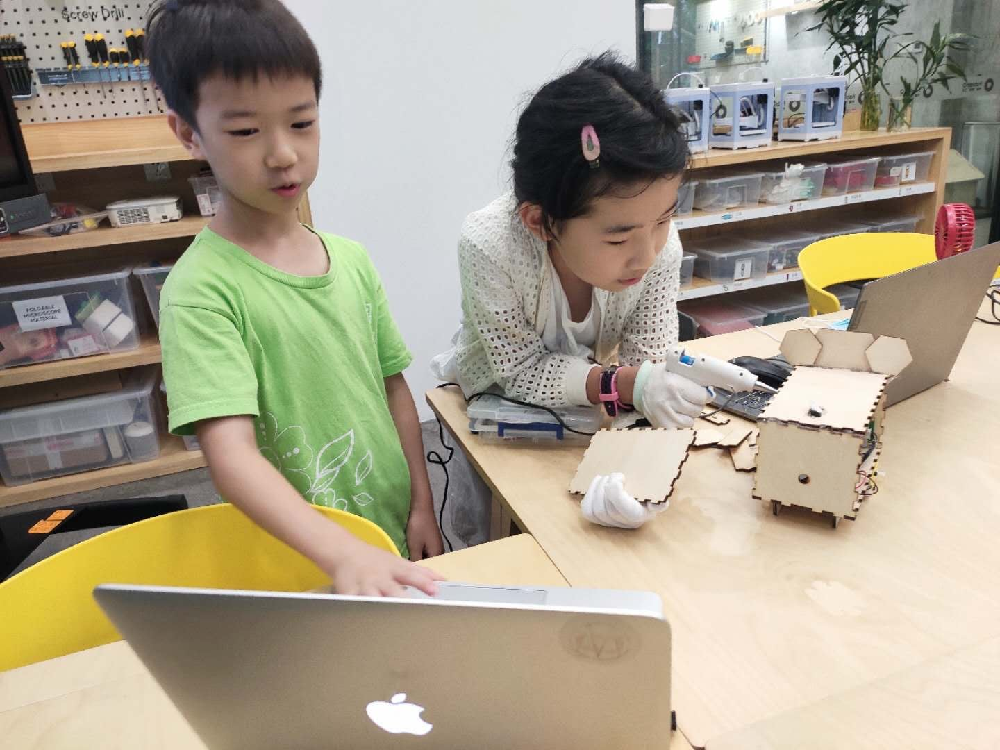
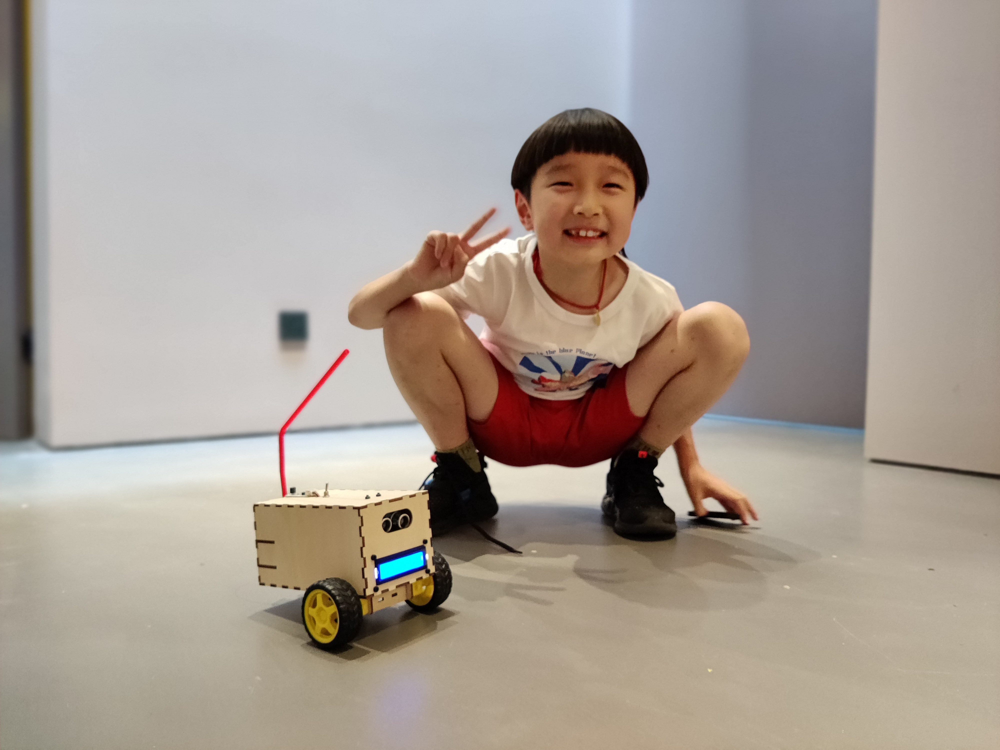

FabLab O Shanghai
Fig.1 Shanghai Tour with FabLab community
2019 - 2020
My first official full time job after graduating as a Mechatronics Systems Engineer from Germany was to be a Teacher in Shanghai, China. During my bachelors degree, I have worked as a student assistant. This job offered a sense of satisfaction whenever I was able to help my fellow students finish their tasks. I felt happy doing that job. Working as a teacher gave me a similar joy. Every time my students successfully completed a task or a project, I received immense satisfaction and happiness.
Fig.2 Introduction to Computer Vision Workshop in Tongji University.
I have always had a strong interest in building new things and experimenting. The Fablab community has given me the right motivation to do so along with the opportunity to meet similarly passionate people from around the globe. Another great advantage Fablab offered me was to move to Shanghai as a Teacher.
Fig.3 FabLab Community
As I arrived in Shanghai, the first thing I did was to give a workshop in the event “From STEM To STEAM” conducted in Tongji University for about 200 teachers from all around China.
 



Fig.4 Companion Robot Class
The goal for this event was to promote Fablabs at Universities and K12 schools in Mainland China under the global wave of maker movement and STEAM trends.
Fig.5 Online Class
Fig.5 Online Class
A popular opinion of the workshop participants was that any project involving computer vision is very challenging and difficult. The participants felt intimidated working with cameras. The biggest achievement I received from giving this workshop was to alter this opinion and inject more confidence into my participants and give better understanding about computer vision.
Fig.5 Online Class
Fig.5 Bio Inspired Fish Class
After conducting the workshop, I started teaching elementary school students in Fablab O, Shanghai. Personally I felt understanding expectations of my students was the most challenging. My idea was to begin my classes with simple, engaging and interesting tasks like making your own toys. I followed similar content as FabAcademy but tried to use more kids-friendly softwares. This enabled my students to start designing in 2D and 3D in just 2 classes. Students found 3D Printer and laser cutter especially interesting. One thing I learned from my experience teaching is that kids are usually very curious and creative.
Fig.4 From bits to atoms.
Three months into working, COVID-19 virus hit China and I was forced to go back home. China was under total lock down. As a teacher, this was a very difficult moment to continue running my classes. Luckily, I started our own gitlab documentation but we always had problems that some students do not have VPN. They are denied ‘the real access’ to the internet. It is always blocked. Therefore, I decided to learn and actually install our own gitlab server in China. I have successfully implemented FabOcloud.com, thanks to Fabacademy that gave me the inspiration. "Stand on the giant shoulder".
Even after several months, the chinese embassy still did not allow foreigners into the country and so I stayed back in Indonasia. Meanwhile, the COVID-19 situation in Indonesia was worsening as well. This is when Pruca Face Shield came into my attention. Understanding the benefits and usage this product can offer to the people during these difficult times, I decided to work on it. Designing such equipment can help health care workers as shortage of face shields was a common issue. We successfully made 700 face shields.
Important Links
Extra
Fig.5 Daniele and me were having advanture looking for components to build something around Shanghai.